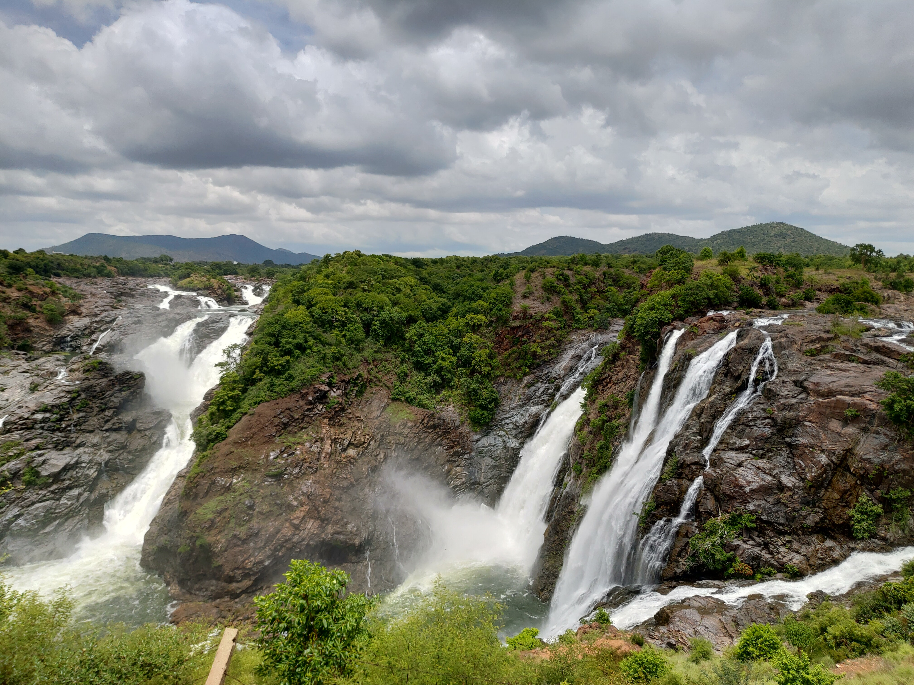

Shivanasamudra Falls is a waterfall on the border of Malavalli taluk, Mandya district and Kollegala taluk, Chamarajanagara district of the state of Karnataka, India. It is situated along the river Kaveri, which forms here the boundary to the Chamarajanagara district and Mandya district. Bharachukki Falls in Kollegala taluk of Chamarajanagara district and Gaganachukki Falls in Malavalli taluk of Mandya district and is the location of the first hydro-electric power stations in Asia, which were set up in 1902. The project was designed by Diwan Sheshadri Iyer and Diwan Sir M. Visvesvaraya of the Kingdom of Mysuru.Gaganachukki has a height of 90 metre and Bharachukki has a height of 69 metre.
The Shivanasamudra Falls is on the Kaveri River after the river has found its way through the rocks and ravines of the Deccan Plateau and drops off to form waterfalls.[1] The island town of Shivanasamudra divides the river into twin waterfalls. This creates the fourth largest island in the course of the river.[citation needed] A group of ancient temples is located here and there likely was a village.
This is a segmented waterfall. Segmented waterfalls occur where the water flow is broken into two or more channels before dropping over a cliff, resulting in multiple sides by side waterfalls. It has an average width of 305 metres (1,001 ft), a height of 98 m (322 ft), and an average volume of 934 cubic metres per second (33,000 cu ft/s). The maximum recorded volume is 18,887 cubic metres per second (667,000 cu ft/s).
It is a perennial waterfall. The time of best flow are the monsoon season of July to October.
A common misconception about these waterfalls is that the left segment is called Gaganachukki and the right segment is called Bharachukki. In reality the Bharachukki falls are a few kilometers to the south-west of the Gaganachukki falls.
